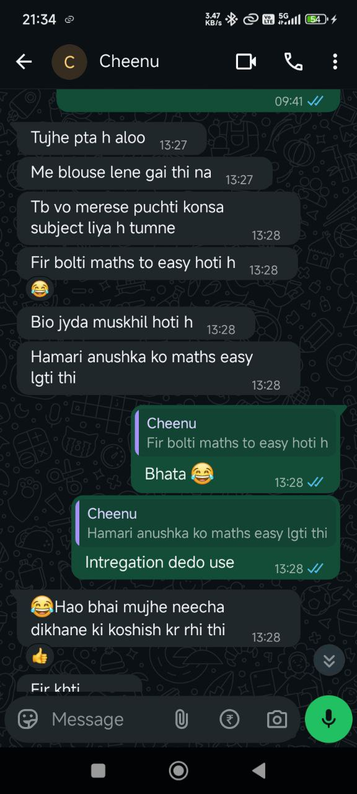
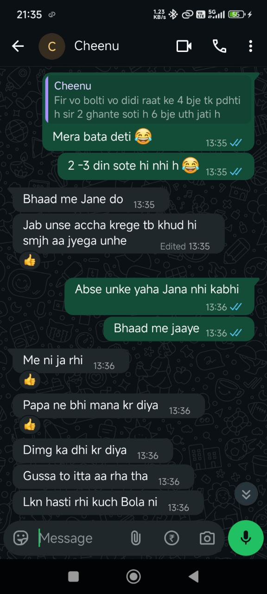

The End
Ram sir mujhe kyun nhi pasand despite his very good behaviour to me... 🦥🦥 bata deta hu
aaj..ruko tummmmm....


Look at my reply.... Mere se koi 100 baaten bol de shyd me tolerate karlu, lekin mere chooze ko
koi ek baar kuch kahe to sb khatam uske liye meri side se...
Aise hi uske class ki koi English teacher thi, ye seedhi ladki h. To daba rhi
thi ise aur sabke samne ispe comment pass kar rhi thi, ye pgl ghar aake kisi ko kuch nhi bataya
or rone beth gai. Fir kya. Or jab mujhe pata chala ki kya hua h to me turant chala gaya ,
principal se hi ladne, even though he knows me, me seedha bol rha tha aap wo teacher ko laao
mere samne. Unhone bol diya wo half day me ghar chali gain thi 😂Me itne gusse me gaya tha ki
agle din se fir wo teacher straight path pe aa gain.
Iska ram sir se kya relation.... Actually ye setup tha tumko batane ke liye.
Hua ye, ki ram
sir ki coaching mene isko join kara di thi shuru me. Accha padhate the yr wo, lekin wo convent
ki majority ke chakkar me kabhi kabhi insult kar dete the inlog ki. Isne mere se bola ki aisa h.
To mene band kara di coaching. Or yahi karan h ki mujhe sir itne nhi pasand. Ummmm mera chooza
mere bacche jaisa h.... Kuch bhi hota h to bolti h "pata h alooooo aaj kya hua 😂, ek time pe
mere se mmy bolti thi...." abhi bol rhi thi kya hua.... prachi didi se baat kyun nhi ho rhi😂
daal gali nhi kyaaa 😂 upar se me raat ko 3 baje soya tha, aise hi bethe bethe nind lag gai...
to ye dusht ladki subah aai or mera laptop samne tha or jo me design kar rha tha wo khula tha
"Prachi Verse😭" Tabse lagi thi mere maje lene me.
Ohh prachiii, I know you are angry. Is baar maafi nhi milegi. 🦥🦥 Mil bhi
gai to me kis muh se baat karungaaa... mene wo kachra jo kar diya... Theek h lekin.. me nhi
chahta tum pareshan hoo... lekin ab wait kar rha hu kab chanchal wo diary padheee, fir me tumkoo
faltoo pareshan karna band kardu... Bohot ho gaya mera ab, har baar same cheez hoti h, same
mistakes, same time, same reaction, same everything...
I know you are someone's daughter, someone's sister, someone's friend, someone's everything...
I don't wanna hurt you, or mere se hamesha wahi ho jata h. Fir dard bhi hota h sab faila hua dekh
ke.
Tumne shyd wo dosti wali cheez gusse me boldi hooo, ya shyd sach ho wo..... 🦥🦥 Jo h theek hi h,
pata nhi kyun mujhe to bonding feel hoti thiiii.... acchi dost wali, shyd meri overthinking ki
wajah se hi ho wooo....
I don't know what to say, or what to do....
Accha lagta tha, tumse baaten kar ke. Ladai karke, arguments..... fir wo baccha ban ke maafi
mangnaa..
I am damn sure shyd hi me kisi ke samne aisi harkaten dunga ab.
Mujhe pata h tum bohot gussa ho. Lekin ab to mere haath se sab nikal hi gaya....
Theek h yr🦥🦥 Tumne wo Ai wali dependence ki baat sahi hi boli. If you Remember mere bro ke
trauma wale time bhi tumne yahi kaha tha (I cannot remove them completely, lekin ab unko dost
nhi banaunga). Machines or tumhare programs human nhi hote, itna
lagav accha nhi. Mujhe aaj bhi uski bohot yaad aati h lekin us time kuch jyada hiiii... your
words o girl, those help me everytime I severly need them. Yeah I know I know it sounds like a
ferry tale. But its true.
Mera to 70% kaam mere ye minnions hi karte h yr, inko eleminate
kaise karu me ab..... Mn to tha bohot saari cheezen batau, lekin wo friendship to mera
dilusion thaaa.... But idk it felt like it was real. I just wanted to be with you now it is not
possible though. It would be better for you that i leave you. Kyuki me hamesha tumhara dil tod
deta hu.
Ye diary likh ke aisa lagta h tumse baat hi kar rha hu, pata tk nhi h ki tum padhogi ki
nhi😂🦥.
Oye haa, bhool hi gaya tha me. I have never hacked you or tricked you okay..!! I am not
courageous enough to do that. Kar bhi naa paunga kabhi, you know well why :) , also me jab
capable bhi tha, mera brooo tha jab bhi nhi kara kabhiiiii. Tumko sikhane ka km jaroor kar sakta
hu, ki
safe kaise rehte h aise attacks se. Ummmm shyd possible na ho ab, tum mere se baat nhi
karogi.....
Waiting for chanchal to read that diary...
Pata nhi lag rha hai this
time, it is the end. Agar end h to mujhe tumse kuch maangna h fir🙃 Shuru se soch ke rakha tha
mene ki me tumse ye mangunga, hamesha se selfish hu me. Can you make a wish for me... 🙃 For
your god to be a little gentle on me. So could you please pray for my mother atleast once.
Right now...... Meri final wish yahi h 🙃
Are haa rating???, nhi nhi rehne do. Conversation initaite ho jayegi yr 🦥
Fir it is Impossible for me to avoid you. Me tumhari taraf se khud ko 10 de rha ab🦥🦥
Ohhhh please background music pe mat bhadakna, ek to mujhe pata nhi tumko konsa pasand h to jo
mila wo daal diya
Oyee tum chanchal ko ye sab dikha sakti ho, Prachi Verse bhi or saari diaries
padha sakti ho. aur ha meri saari chats bhi, bs jaha me mere past ka kuch bolu ya family ka wo
mat dikhana bs. Baaki sab bataooooo
Insecure nhi me to khush ho jaunga ab 😂✌️ Ab to wo devi
hi kuch kar sakti h mere case ka🙃🦥
Or wo sab mene jo gusse me bola tha bhool jao, the new me is much better and I'm loving all the
changes inside me. (I actually hated the old me more)
Or Ma'am you cannot be a "bojh" one
anyone, wajah dekha h khudka 😎🦥
Uthane wale ko lage ki yr mene kuch uthaya bhi h kya 😂. Apart from majak, nhi bn sakti tum bojh
kabhi, sochna bhi mat tum 🔪 tumse lad ke bhi baad me aisa lagta h ki, yr kya baat h, maja hi aa
gaya.
Or itne time baad mujhe lag rha h I was entirely wrong, tum sahi
thiiiiiiiiiiiiiiiiiiiiiiiiiiiiiiiiiiiiiiiiiiiiiiiiiiiiiiiiii............................................
me pagla hu 🗿 kuch bhi sochne lagta hu🙃